Префектура Аомори · Аомори · фестиваль
Фестиваль Нэбута в Аомори: светящиеся великаны, танцоры ханэто и фейерверк над морем
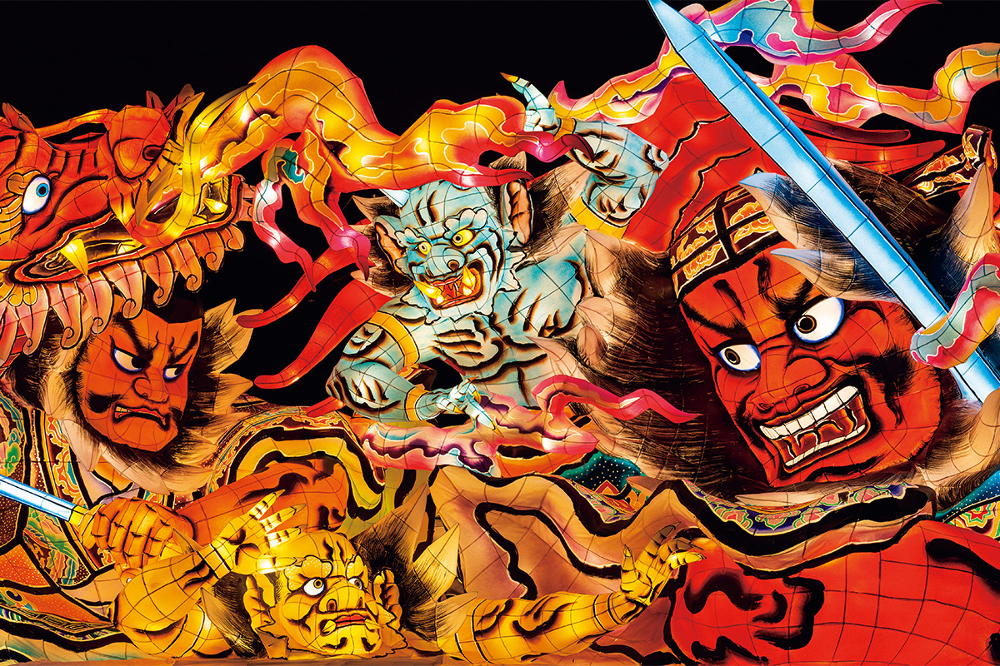
Шесть дней в начале августа тихий северный Аомори живёт одним праздником. По улицам плывут подсвеченные фигуры воинов высотой с дом, вокруг них прыгают тысячи танцоров, и весь город кричит «Рассэра!».
Праздник
Самый большой фестиваль севера
Летом фестивали нэбута проходят во многих городах префектуры Аомори, но самый большой праздник устраивает её столица. По данным 2024 года, за шесть дней фестиваль Нэбута в Аомори собирает больше 2 млн зрителей, а танцоров, которых здесь называют ханэто, набирается около 100 000. На эти дни спокойный город превращается в одно сплошное гуляние.
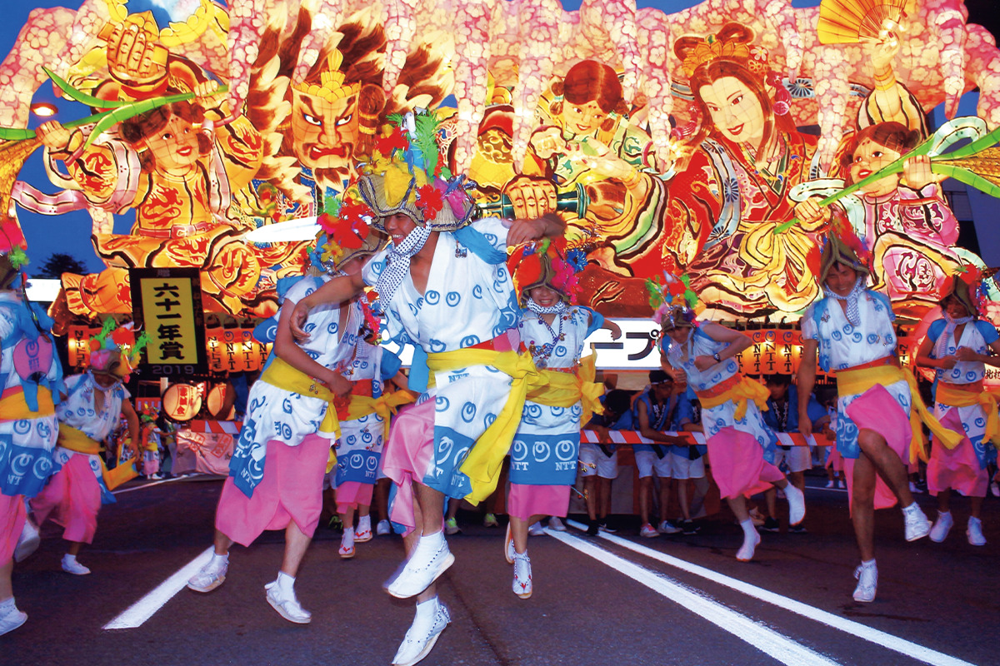
Каждый вечер, кроме последнего, по центру города проходят огромные нэбута. Вокруг каждой прыгают и кружатся тысячи ханэто, а крик «Рассэра, рассэра!» катится по улице волной. Фестиваль Нэбута по праву считают одним из самых больших не только на севере Японии, но и во всей стране.
История
Прогнать сонливость
Откуда взялись нэбута, точно не знает никто. Чаще всего их связывают с обрядом «нэмури-нагаси», «смыванием сна»: в бумажные фонари будто бы запирали сонливость и злых духов и пускали их по воде. Другие версии говорят о слиянии с обрядами изгнания насекомых-вредителей с полей и с праздником Танабата.
Под злыми духами, судя по всему, понимали летнюю сонливость и вялость от жары. В пору, когда нужно ухаживать за полями, такая напасть была настоящим врагом, и от неё старались избавиться всеми силами. Есть даже версия, что само слово «нэбута» выросло из «нэмутай», «хочется спать».
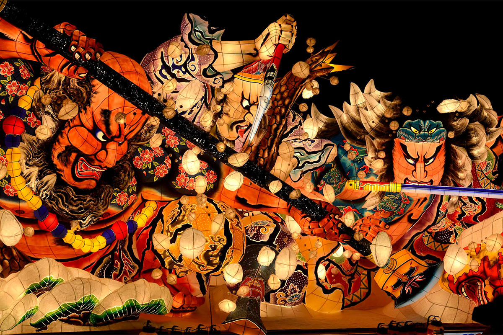
Похожие праздники, где сонливость сажают на повозку и отправляют по воде или возят по деревне светящиеся фигуры из бумаги на бамбуковом каркасе, есть по всему северу и на побережье Японского моря. Нэбута Аомори выделяются тем, что похожи на ожившую гравюру с актёрами кабуки. Фигуры героев и воинов, по преданию, появились в начале XIX века, когда расцвела городская культура эпохи Эдо. Огромными нэбута стали уже после Второй мировой войны.
Нэбута
Как рождается великан
Нэбута делают из деревянного каркаса, связанного проволокой. Его обтягивают японской бумагой васи и раскрашивают. Когда-то внутрь ставили свечи, а нэбута на улицах Аомори давно подсвечивает электричество. Всю работу, от эскиза до готовой фигуры, ведёт мастер нэбута-си. Он проектирует конструкцию, а сама нэбута около трёх месяцев собирается в одном из особых сараев для нэбута, которые ставят в городе.
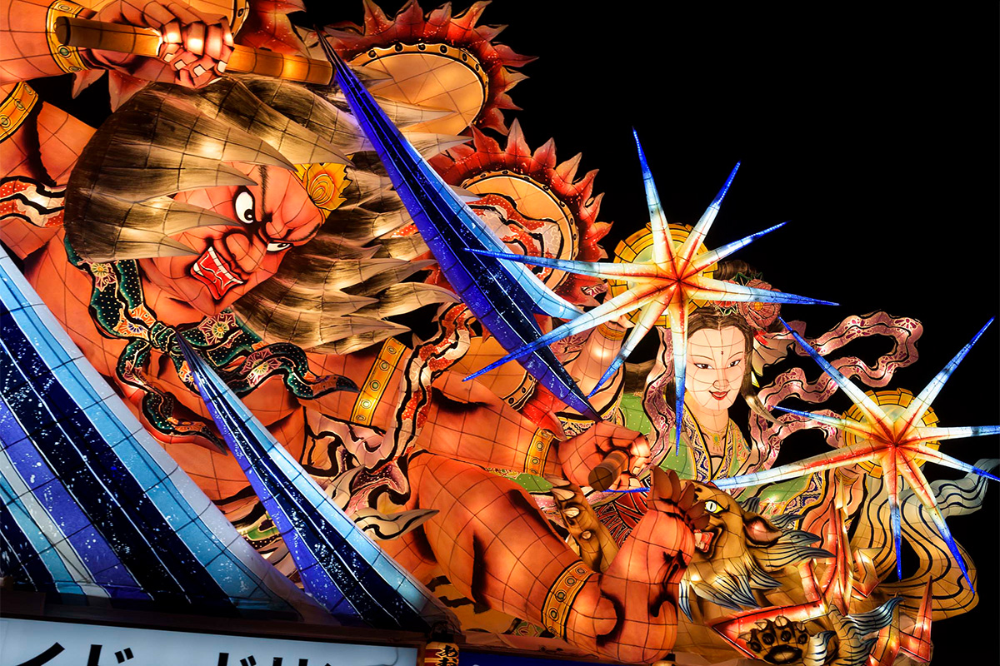
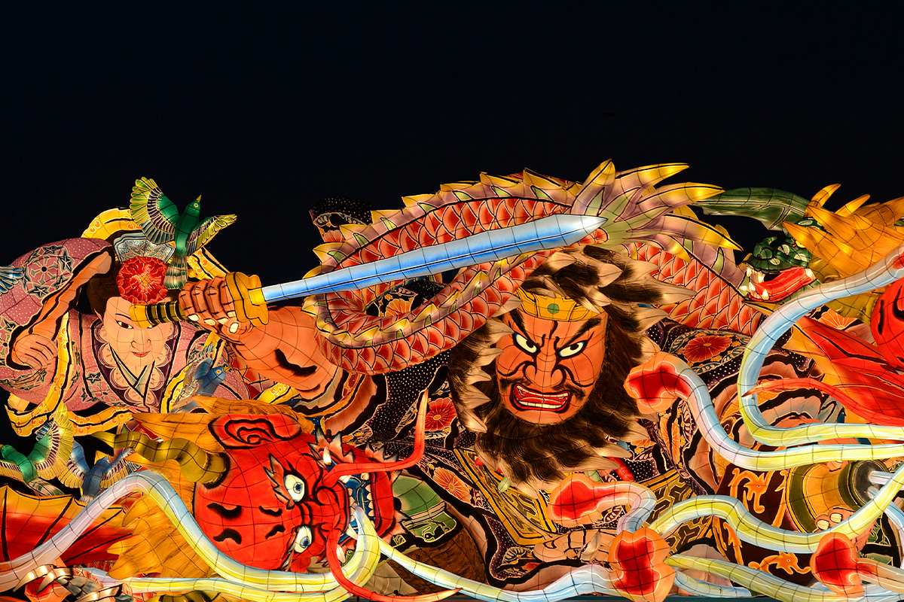
Сюжеты чаще всего берут из арагото, «грубого стиля» кабуки с его неистовыми героями. Сложнее всего решить, какую сцену выхватить и как построить композицию, чтобы фигура смотрелась со всех сторон. Мастера нэбута-си соперничают друг с другом, их профессия почётна, и многие местные дети мечтают ею заняться. Готовые нэбута участвуют в конкурсе, а лучшая получает главную награду, «Гран-при нэбута».
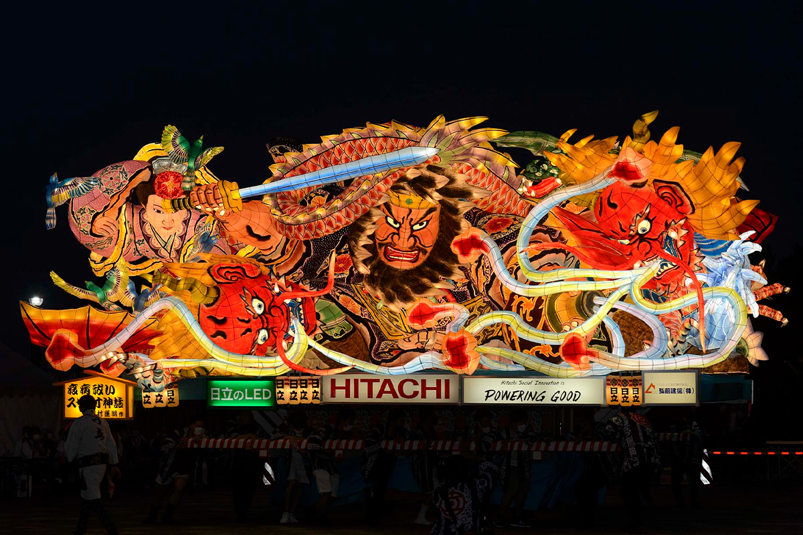
Нижняя часть нэбута это тележка, и вместе с фигурой она весит около четырёх тонн. Впереди идёт распорядитель с веером, по его знаку тянущие тележку двигаются в такт, а вокруг каждой нэбута движутся тысячи ханэто. Фигуры, над которыми работали месяцами, после фестиваля разбирают, и каждый год их строят заново. Нэбута живут только дни фестиваля, и от этой недолговечности они кажутся ещё красивее.
Ханэто
Стать частью праздника
Смотреть на нэбута захватывает, но ещё интереснее самому выйти на улицу ханэто. Для этого не нужно вступать в какую-либо команду: достаточно надеть праздничный костюм и соблюдать правила участия. В 2022 году, правда, нужна была предварительная заявка.
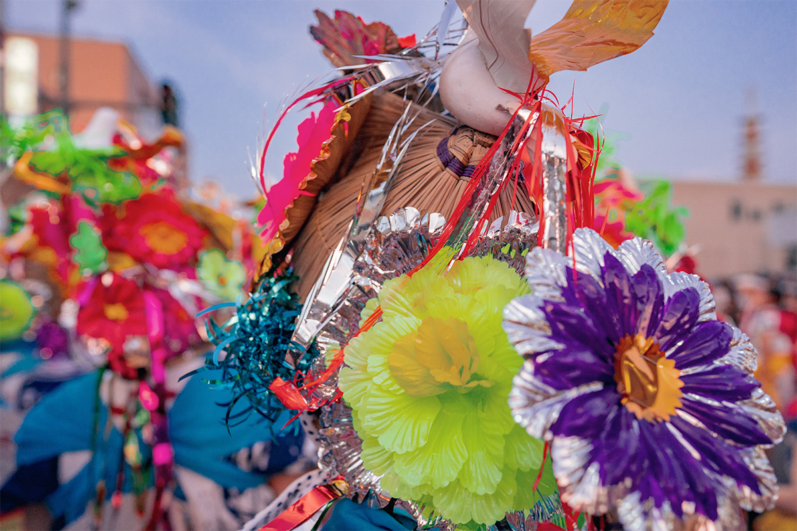
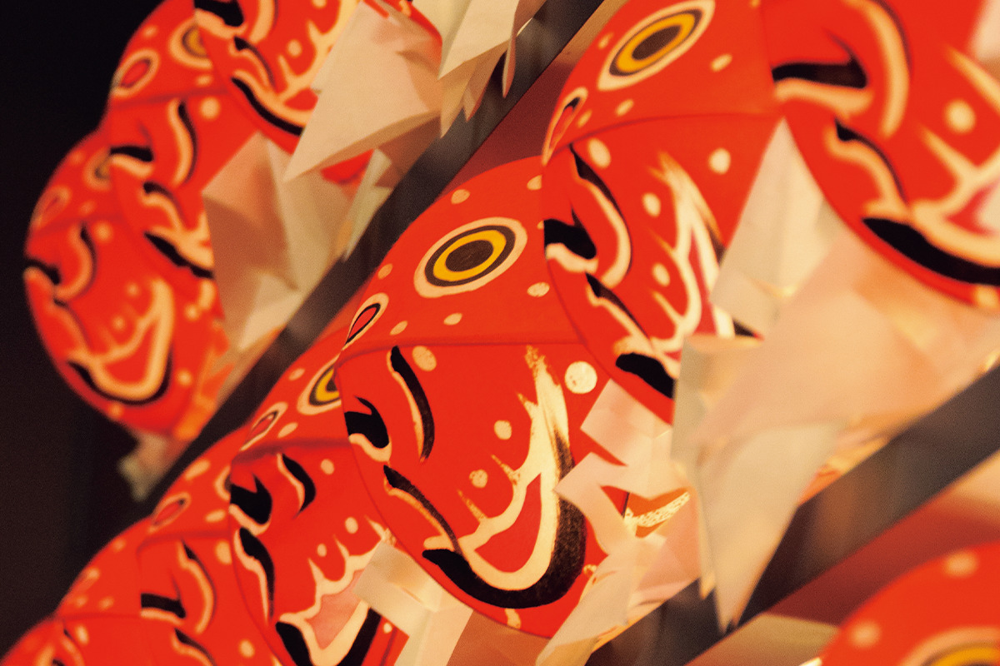
В дни фестиваля на карнизах домов висят милые фонарики «кингё-нэбута» в виде золотых рыбок. Золотых рыбок в Аомори разводят с давних времён, и фонарики ненавязчиво напоминают об этой истории. Местную породу «цугару-нисики» держали ещё в эпоху Эдо в княжестве Цугару, и разводить её дозволялось только самураям. Гуляя по городу, не забывайте поглядывать на карнизы.
Финал
Нэбута выходят в море
Вечером последнего дня, 7 августа, нэбута отправляются в море. Четыре фигуры, получившие «Гран-при нэбута», приз губернатора и другие награды, ставят на баржи и везут по порту Аомори. Это и парад победителей, и отголосок «нэмури-нагаси», с которого, по одной из версий, всё началось. А днём, ещё до морского парада, нэбута в последний раз проходят по городу.
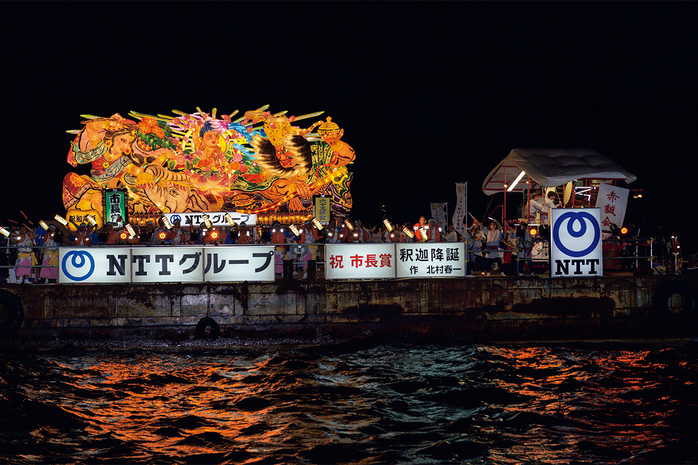
Вместе с морским парадом начинается фейерверк: в 2024 году над портом запустили больше 10 000 зарядов. Светящиеся нэбута медленно плывут под вспышками в небе, и этой ночью шестидневный праздник света заканчивается.
Музыка
Флейты, барабаны и тарелки
Второй главный герой фестиваля это оркестр нэбута-баяси. В нём играют на флейтах, барабанах и маленьких ручных тарелках тэбира-ганэ. Особенно впечатляют барабаны: если стоять рядом, их гул отдаётся во всём теле. В каждой группе оркестра от 50 до 100 человек, среди них много женщин и детей.
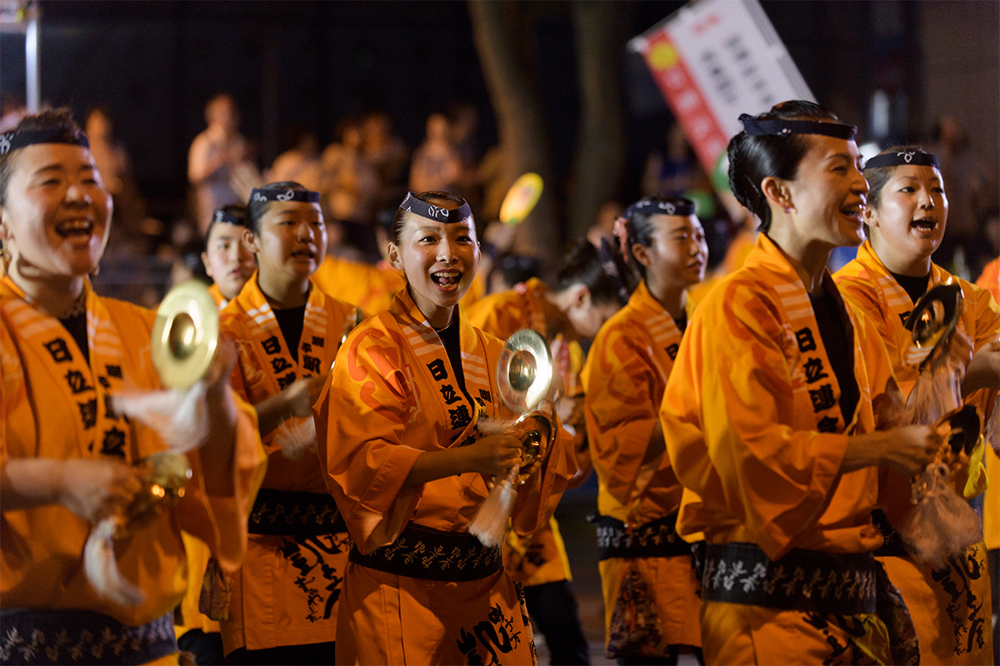
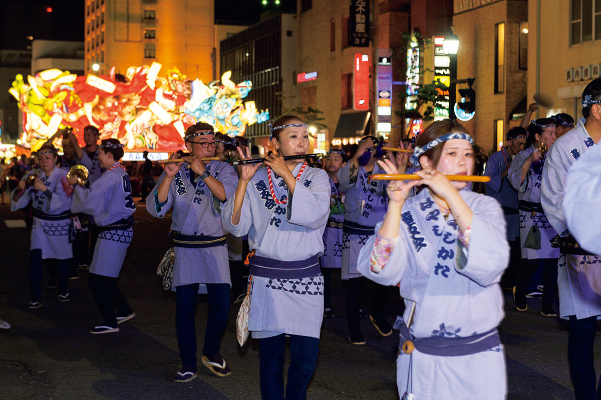
У каждого города свой клич и свой ритм. В Аомори кричат «Рассэра, рассэра!», в Хиросаки «Я-ядо, я-ядо!», в Госёгаваре «Яттэмарэ, яттэмарэ!», а в соседнем Куроиси «Ярэ-ярэ-я!». Форма у праздников общая, а характер у каждого местный, и в этом тоже их прелесть. О нэпута в Хиросаки и великанах Госёгавары читайте в статье «Нэпута Цугару».
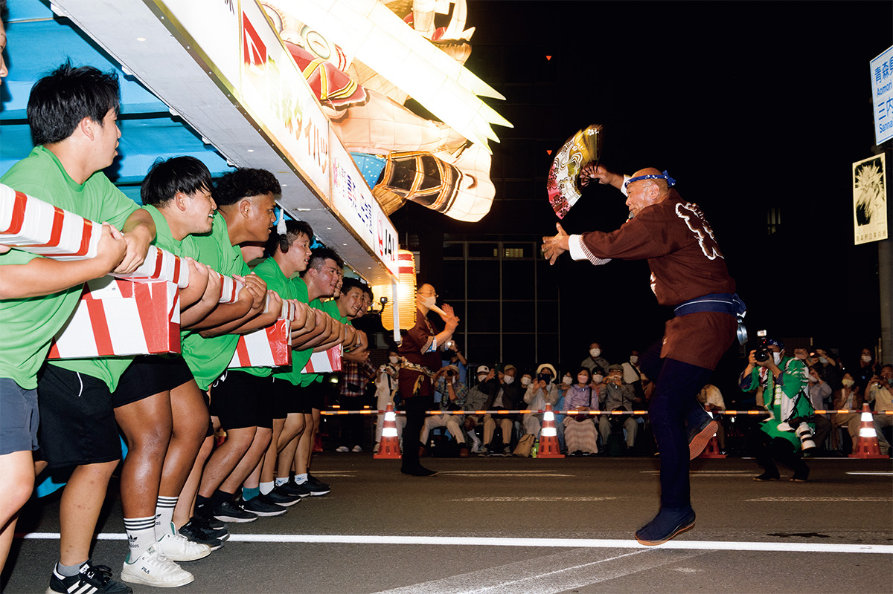
Круглый год
Музей нэбута у вокзала
Если в августе приехать не получается, нэбута можно увидеть и в другое время. Несколько фигур сохраняют в «Доме нэбута Ва-Рассэ» прямо у станции JR Аомори, и там на них можно смотреть в любой сезон.
Фестиваль Нэбута в Аомори
- Адрес
- префектура Аомори, Аомори, центр города
- Телефон
- +81 17-723-7211
- Даты
- ежегодно 2–7 августа; в 2026 году со 2 по 7 августа
- Как добраться
- от станции JR Аомори пешком около 10 минут (зависит от места); на машине от развязки Аомори-Тюо скоростной дороги Аомори около 15 минут
- Сайт
- nebuta.jp
Фото: yu_photo, SHOHEI.